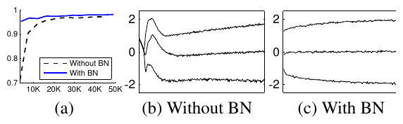
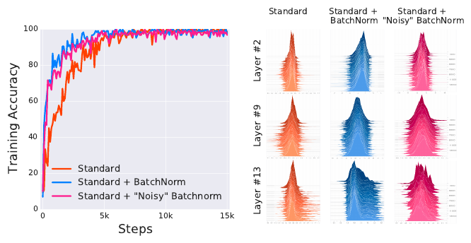

Making Networks Train Reliably
Initialization, normalization, and generalization
Making networks train reliably
CHAPTER 05 · RELIABLE TRAINING
Initialization, normalization, and generalization
A network must first preserve useful signals through its layers—then learn patterns that survive beyond its training data.

Open with one recurring network rather than a catalogue of tricks. At first, its activations collapse or explode. Initialization and normalization make optimization possible; validation evidence then reveals whether training success generalizes. Dropout and early stopping respond to that second problem. The hero previews this progression from unstable signals to stable computation and finally a focused generalizing path.
Today’s journey
01
Why initialization matters
Follow signals through depth
02
Xavier, He, and alternatives
Match scale to the activation
03
Batch normalization
Why distributions drift · normalize, scale, and shift
04
Generalization and regularization
Training success versus new data
05
Dropout and early stopping
Two practical controls
06
Practical case study
Stabilize, train, and generalize
Our recurring experiment: same network · inspect activations · change one mechanism · measure validation
This is the complete 1h30 path. Sections 1–4 solve a trainability problem: preserving usable forward activations and backward gradients. Sections 5–6 solve a generalization problem: selecting a model that performs on unseen data. Section 7 combines the decisions in one controlled case study. Keep these two problems distinct throughout the lecture.
01 · Why initialization matters
Same network, different first forward pass

Very smallactivations collapse near zero
Moderatevariation survives through depth
Very largetanh saturates near −1 and +1
Budget about two minutes. Establish the controlled comparison before revealing any outcome: architecture, input batch, and activation are fixed; only the scale of the sampled weights changes. Reveal the three conclusions from left to right. “Moderate” is intentionally unnamed—we have not derived Xavier or He initialization yet. Initialization affects the very first forward and backward pass, before the optimizer has an opportunity to repair anything.
One layer rescales a signal
Budget about two minutes. Use the concrete layer equation only after students have seen the eight-layer outcome. “Spread” refers to the distribution across units and examples, not one scalar activation. Avoid claiming that variance alone completely characterizes a representation; it is a useful first diagnostic. Tanh makes both failure modes visible: narrow inputs collapse toward zero, while very wide inputs land in saturated tails.
Depth repeats the rescaling
ACTIVATION STANDARD DEVIATION BY LAYER
REPEATED COMPOSITION
\[ h^{(8)}=f\!\left(W^{(8)}f\!\left(\cdots f\!\left(W^{(1)}x\right)\right)\right) \]
A small scale error appears in one layer.
The next layer receives the changed distribution.
Depth compounds the effect.
Deep networks multiply scale decisions—they do not average them away.
Budget about two minutes. Read the graph horizontally. These curves are schematic signatures of the controlled experiment, not universal numerical thresholds. Each layer consumes the distribution produced by the previous layer; therefore a modest mismatch can become a severe deep-layer problem. This is why a generic small random number is not a sufficient initialization rule.
Your turn: diagnose the activation histograms
GIVEN
The same eight-layer tanh network under three initial weight scales.
Match A, B, and C to:
- collapsed near zero
- useful spread
- saturated at the extremes
PAUSE · 45 seconds Describe the visible evidence—not just the label.
WORKED SOLUTION A: useful · B: collapsed · C: saturated A spans the active tanh region; B concentrates at zero; C piles mass near −1 and +1.
Budget about two minutes including the pause. Require evidence from distribution shape. A is not “perfect”; it simply preserves a useful range. B indicates that distinct inputs are becoming nearly indistinguishable. C indicates that many tanh derivatives will be close to zero because outputs lie near the flat tails. Advance once to reveal the worked solution.
The backward pass inherits the same problem
Repeated matrices and nonlinearities can collapse or saturate the signal.
SAME INITIAL
WEIGHTS W¹ · W² · … · W⁸
The chain rule repeatedly multiplies by weights and activation derivatives.
CONSEQUENCE Poor initialization can make early-layer gradients tiny or unstable before learning begins.
Budget about two minutes. Connect to backpropagation without re-deriving it. The same sampled weights participate in both passes. For tanh saturation, the derivative factor is near zero; repeated products can then attenuate gradients strongly. Do not claim that all large weights always create exploding gradients—activation derivatives and architecture matter. The central point is that initialization controls both information flow directions.
What should initialization accomplish?
Preserve useful variation
Keep forward activations and backward gradients from systematically shrinking or growing across layers.
Let units learn differently
If every unit begins identically, it receives the same gradient and remains identical.
DESIGN QUESTION How should the weight variance depend on layer width and activation? That question leads to Xavier and He initialization.
Budget about two minutes. Separate two jobs. Randomness breaks symmetry; appropriate scale supports signal propagation. Random is therefore necessary but not sufficient. End on the design question, not a formula. Section 2 will derive how fan-in, fan-out, and the activation function determine practical initialization rules.
03 · Batch normalization
Initialization is a promise made at step 0
At step 0, show three slightly different but balanced activation histograms produced by a Xavier-initialized network. Green, blue, and amber consistently identify layers 1, 2, and 3. Each advancement replaces the complete previous frame in the same space. Steps 1–3 progressively compound the drift. At step 4, layer 1 has an excessively wide, edge-heavy distribution; layer 2 has collapsed around zero; and layer 3 is concentrated around nearly one value. Treat these as three illustrative failure signatures, not one literal training trajectory. Reveal the blue takeaway only after students have seen the unacceptable Step 4 distributions.
Make stabilization part of the network

This slide is being constructed one component at a time. The left panel is intentionally empty. The right panel reproduces Algorithm 1 from the original paper. (Ioffe and Szegedy 2015)
Batch normalization follows the tensor
Read the diagram from left to right. For a BatchNorm1d input with shape B by C by W, statistics are computed over the batch and width axes, leaving one mean and variance per channel. They may be represented as C-vectors and reshaped to 1 by C by 1 for broadcasting. Gamma and beta are likewise learned per channel and broadcast across B and W. For dense input B by C, the same rule reduces only B; for BatchNorm2d input B by C by H by W, it reduces B, H, and W.
The original evidence: activations drift less

First read panel a: BatchNorm trains faster on this MNIST experiment. Then compare panels b and c. These are not histograms; they trace three percentiles of one typical pre-sigmoid input as training proceeds. The original interpretation was that stabilizing this distribution reduces internal covariate shift. Present that as the 2015 hypothesis, not yet as settled mechanism.
Stable distributions are not the whole explanation

Explain the intervention, not merely the correlation. The noisy-BatchNorm model deliberately reintroduces changing means and variances after normalization. Its activation distributions are visibly unstable, but its optimization remains close to standard BatchNorm and far better than the unnormalized network. Therefore distributional stability is neither a sufficient causal explanation nor the complete story. The paper argues that BatchNorm makes the loss landscape and gradients smoother and more predictive. (Santurkar et al. 2018)
What should BatchNorm do at evaluation time?
TRAINING
def batch_norm_train(x, gamma, beta,
eps=1e-5):
# x: (B, C, W)
# Reduce batch and width.
mean = x.mean(
axis=(0, 2), keepdims=True
)
var = x.var(
axis=(0, 2), keepdims=True
)
x_hat = (x - mean) / np.sqrt(
var + eps
)
return gamma * x_hat + betaVALIDATION
def batch_norm_eval(x, train_x,
gamma, beta,
eps=1e-5):
# train_x: activations from
# ALL training examples.
mean = train_x.mean(
axis=(0, 2), keepdims=True
)
var = train_x.var(
axis=(0, 2), keepdims=True
)
x_hat = (x - mean) / np.sqrt(
var + eps
)
return gamma * x_hat + betaTRAINING
def batch_norm_train(x, gamma, beta,
running_mean,
running_var,
momentum=0.1, eps=1e-5):
mean = x.mean(axis=(0, 2), keepdims=True)
var = x.var(axis=(0, 2), keepdims=True)
running_mean *= 1 - momentum
running_mean += momentum * mean
running_var *= 1 - momentum
running_var += momentum * var
x_hat = (x - mean) / np.sqrt(var + eps)
return gamma * x_hat + betaVALIDATION
def batch_norm_eval(x, gamma, beta,
running_mean,
running_var,
eps=1e-5):
x_hat = (x - running_mean) / np.sqrt(
running_var + eps
)
return gamma * x_hat + betaPause on the yellow question because this is the course’s first layer whose forward behavior changes between training and evaluation. The first answer deliberately stores no running statistics, forcing evaluation to recover population statistics from all training activations. On the next advancement, replace it with the practical implementation. Training still normalizes with current-batch statistics, while exponential updates maintain running estimates. Evaluation reads those frozen arrays directly. “Constant” means independent of training-set size; the elementwise transform still scales with the number of activations. Frameworks differ in whether their momentum argument denotes the old-statistic or new-batch coefficient.
BatchNorm: powerful, but not free
- Supports larger learning rates
- Reduces sensitivity to initialization
- Keeps activation scales manageable
- Adds useful mini-batch noise
- Reduce over the correct tensor axes
- Learn γ and β by backpropagation
- Track running mean and variance
- Switch explicitly between train and eval
- Small batches give noisy statistics
- Examples influence one another
- Stale running statistics create eval gaps
- Distributed training may require synchronization
Use this as the BatchNorm section checkpoint. The left card summarizes the empirical reasons BatchNorm became influential. The middle card names the details students must implement correctly: axes, affine parameters, running buffers, and modes. The right card names the practical objections often emphasized in implementation-focused teaching such as Karpathy’s Zero to Hero lecture: examples become coupled through batch statistics, small batches are unreliable, and the train/eval split creates opportunities for bugs. Add that SyncBatchNorm can improve global statistics in distributed training but introduces communication cost. The mechanism behind the optimization benefit should remain stated cautiously after the Santurkar et al. result.
Generalization begins where training loss ends
This is the single opening slide for the new section. Begin with the training curve only, then ask students whether continued improvement guarantees a better model. Reveal the validation curve: it improves at first, reaches a minimum, and then worsens while training loss continues to fall. Name the widening separation the generalization gap. This concrete observation motivates regularization; do not define a catalogue of methods yet.
Which evidence may choose the model?
ONCE
Budget about two minutes. This retrieves the train/validation/test distinction introduced in Lecture 1 and applies it to the curve on the previous slide. Ask for the decision before revealing the flow. Training produces candidate parameter states; validation evidence chooses among them; the untouched test set is opened only after all model and checkpoint decisions are fixed. “Unbiased” here means with respect to this selection process, assuming the test examples represent the target distribution. Repeatedly checking the test score and revising the model leaks information even if no gradient is computed on test examples.
Perfect training fit leaves the boundary undecided
Budget about three minutes. Reveal both candidate boundaries with training points only. They have identical training accuracy, so the observed training data cannot decide between them. Pause on the overlaid question before revealing the six validation points in each panel. Model A classifies all six correctly; Model B fails on half because its local bends followed the particular training sample rather than the broader separation. The picture is schematic: smoothness is a useful low-dimensional intuition, not a universal definition of generalization in neural networks. End by naming the new need—a preference among solutions—which motivates regularization on the next slide.
Regularization writes that preference into the objective
Budget about three minutes. Start from the two boundaries on the previous slide: both receive the same training loss, so that objective alone is indifferent. Ask how to encode the desired preference before revealing the penalty scores and formula. Ω is deliberately generic here; it measures whatever property we choose to discourage, and smaller is preferred. Work the numbers with λ = 0.10 so students see that the additional term breaks the tie. Stress that λ controls the trade-off and that validation evidence, not the training objective itself, tells us whether the chosen preference improves generalization. The next slide can make Ω concrete with an L2 weight penalty.
Choose where the constraint enters
Budget about two minutes. Treat this as synthesis, not a survey lecture: students already know the individual regularization families. Start from the shared symptom in the center and reveal the intervention points clockwise. Emphasize that these methods act on different parts of the five-part learning system: parameters, data, hypothesis, and optimization trajectory. They are therefore not interchangeable, and stacking more of them is not automatically better. Validation evidence chooses both the intervention and its strength. End on the fourth card; dropout and early stopping now become the next section’s concrete mechanisms rather than unexplained names in a catalogue.
A classifier can lean too heavily on one feature
 TRAINING EVIDENCE · DOG CLASSMany cues may correlate with the label.
TRAINING EVIDENCE · DOG CLASSMany cues may correlate with the label.
Budget about three minutes. Use the CIFAR-10 dog row as the concrete setting, but state that the feature scores are a course-made schematic rather than measurements from these exact images. Reveal the three feature votes together: the classifier is correct, yet most of its confidence comes from one background cue. On the next advancement, remove that activation and show the score collapse. Ask students for an intervention before naming dropout. The intended answer is not “delete the bad feature”—we generally do not know in advance which learned feature will become brittle. Reveal the dropout idea: randomly removing activations during training forces the rest of the network to remain useful. Do not explain masks or scaling yet; those are the next slides.
Each training pass samples a different subnetwork
Budget about three minutes. First reveal the stored architecture and make clear that every node and parameter belongs to one model. Replace it with training pass A: the crossed nodes are inactive and every incident edge is faded because no signal or gradient travels through those paths on this pass. Replace that frame with pass B and ask students to identify what remained the same: the stored parameters and architecture. What changed is the sampled binary mask and therefore the active computation. “Subnetwork” is a useful interpretation, but the implementation is an activation mask rather than repeatedly constructing and destroying model objects. Standard elementwise dropout typically samples masks independently across examples; the diagram isolates one example so its active subnetwork remains readable. The following slide will formalize that mask and explain its scaling.
Masking changes the scale—unless we compensate
Budget about four minutes including the pause. Keep the two definitions visible and ask students for the expectation before and after raw masking. Reveal the derivation: because the Bernoulli mask is sampled independently of the activation, E[MX] = E[M]E[X] = qE[X]. Next ask for a multiplicative correction c and work from the preservation requirement E[cMX] = E[X] to c = 1/q. On the next advancement, remove the symbolic derivation and replace it with the vector example. Verify one coordinate explicitly: when h₃ = 6 and q = 0.5, inverted dropout produces 0 or 12 with equal probability, so its expectation is 6. A particular masked vector remains noisy; only the expectation is preserved. Close by distinguishing keep probability q from the drop probability p commonly accepted by APIs.
Dropout has two forward-pass behaviors
Budget about three minutes. Reveal training mode first and connect it directly to the previous slide: masks are random and surviving activations have already been divided by q. Ask students to predict what should happen for one new image. Reveal evaluation mode: all activations are used, no mask is sampled, and no additional scaling is applied. This is why inverted dropout is convenient. Then reveal the explicit mode switch. As with BatchNorm, the same model object has two forward behaviors; unlike BatchNorm, dropout stores no running statistics and becomes the identity transformation at evaluation. Run evaluation in training mode and repeated predictions can differ even for the same input.
A correct NumPy implementation has one mode branch
import numpy as np
def dropout(x, p, training, rng):
if not 0.0 <= p < 1.0:
raise ValueError("p must be in [0, 1)")
if not training or p == 0.0:
return x
q = 1.0 - p
mask = rng.random(x.shape) < q
return x * mask / qsamples = np.stack([
dropout(x, p=0.5, training=True, rng=rng)
for _ in range(100_000)
])
np.allclose(samples.mean(0), x, atol=0.1)Budget about four minutes. Read the implementation by behavior rather than line by line. First reveal the training trace and map its three verbs to the previous derivation. Then reveal the evaluation trace: the early return is the entire second behavior. Highlight that the random generator is passed into the function instead of recreated internally; this supports controlled, reproducible experiments while still producing a new mask on each call. Finish with a Monte Carlo property check rather than testing one arbitrary mask: across many draws, the sample mean should approach x. The tolerance is appropriate for this small demonstration but is not a universal testing constant. Also test separately that evaluation returns x exactly and does not advance the generator state. This implementation uses elementwise dropout; structured variants would change the mask shape, not the scaling argument.
Early stopping keeps an earlier checkpoint
Budget about three minutes. Begin with training loss alone and ask whether anything in that curve tells us when to stop. Reveal validation loss and save the checkpoint at its minimum. Next reveal the patience window: validation measurements are noisy, so one worse epoch should not necessarily terminate training. After four non-improving checks, reveal the stop line and then follow the arrow backward—the weights at the stopping epoch are not the weights we deploy. Finish with the two benefits: limiting continued adaptation to training-specific detail and avoiding computation after validation progress has stalled. Patience is an operational safeguard against noise, not a guarantee that the globally best future epoch has already occurred.
Early stopping is a four-rule controller
Budget about four minutes. Connect each rule directly to the preceding visual. First define the monitored score at epoch t; here it is validation loss, so lower is better. Then introduce the minimum meaningful change delta and ask what happens when an apparent improvement is smaller than delta. Reveal the state update: a meaningful improvement replaces both the best score and checkpoint and resets the counter; otherwise the counter advances. Finally, stop once the counter reaches patience P and return the saved weights rather than the latest weights. Mention that accuracy or another maximized metric reverses the inequality, while the controller itself is unchanged.
Four classical learning-rate schedules
Budget about five minutes. Start with the shared warmup rule: over W epochs, the rate rises linearly from zero to eta-zero. Warmup limits unstable first updates, especially when gradients or optimizer statistics have not yet settled. Then keep the axes identical and reveal the four continuations one by one. Constant is the baseline rather than a decay rule. Step decay makes explicit scale changes at milestones separated by S epochs. Exponential decay reduces the rate by a constant multiplicative factor over equal time intervals. Cosine decay starts and ends gently over the remaining horizon T minus W and approaches eta-min. Ask students to compare when each schedule spends most of its training budget at a large rate. These are predetermined schedules; a metric-triggered reduction such as reduce-on-plateau is adaptive and deliberately left for the implementation discussion.
Case study: rescue a small image classifier
Budget about five minutes. Treat the curves as a schematic case study, not reported benchmark data. Reveal the baseline and ask students to identify two different problems: unstable early progress and a later generalization gap. Reveal the diagnoses before the remedies. Then assemble the recipe in causal order: initialization and normalization protect signal flow; warmup and decay control update size over time; weight decay and dropout constrain the fitted solution; early stopping decides which checkpoint to deploy. Finally reveal the controlled trace and emphasize that the architecture, data, and optimizer budget did not change. The lesson is coordination: each mechanism addresses a different failure mode.
Recent techniques extend the training control panel
Optimize the worst loss in a small neighborhood of the weights, encouraging solutions that remain good under perturbation.
Sharpness-Aware Minimization for Efficiently Improving Generalization · Foret et al., 2021 ↗Use momentum to choose a sign-based update while storing one optimizer state per parameter instead of Adam’s two.
Symbolic Discovery of Optimization Algorithms · Chen et al., 2023 ↗Combine optimization and iterate averaging so training need not specify a decay schedule or stopping horizon.
The Road Less Scheduled · Defazio et al., 2024 ↗Run suitable operations in FP16 while preserving sensitive state and small gradients at higher precision.
Mixed Precision Training · Micikevicius et al., 2018 ↗Store selected activations only and recompute the missing ones during backward to trade compute for memory.
Training Deep Nets with Sublinear Memory Cost · Chen et al., 2016 ↗Run several micro-batches, add their gradients, then make one optimizer step with a larger effective batch.
Measuring the Impact of Gradient Accumulation on Cloud-Based Distributed Training · Liu et al., 2023 ↗Budget about four minutes. This is a horizon map, not six new lessons, and every technique applies to ordinary feed-forward or convolutional neural networks. Reveal the recent methods first. Sharpness-aware minimization changes the objective by considering a small neighborhood around the current weights; it can improve generalization but usually requires extra gradient computation. Lion is a sign-based momentum optimizer with one state tensor rather than Adam’s two, but its learning rate and weight decay must be retuned. Schedule-free optimization combines optimization with iterate averaging so the final horizon need not define a decay schedule. Then identify the two foundations: mixed precision reduces arithmetic cost and memory traffic, while activation checkpointing trades extra computation for lower activation memory. Finish with modern gradient accumulation, which permits a larger effective batch without storing that whole batch at once. Emphasize that gradients are added across micro-batches and normalized consistently before the single optimizer step; zeroing gradients between micro-batches would destroy the mechanism. End by asking students to classify the need before naming a technique; none is a universal upgrade.
Next week: prepare for PyTorch
Close in under one minute. The NumPy implementations in this lecture exposed the mechanics; next week PyTorch will provide tensors, automatic differentiation, modules, and optimizers that assemble those mechanics into practical training loops. Ask students to arrive with the course environment working so the session can begin with code rather than installation.